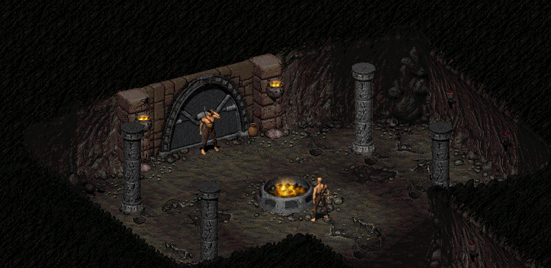
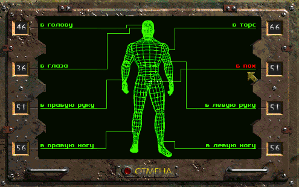
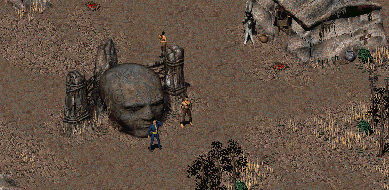

Достигнув последнего испытания, Грогнак встретил Кэмерона


И вот наконец Грогнаку выдали...
Грогнак: Э, моя не станет одевать этот вонючий восьмидесятилетний комбинезон! И точка! *внезапно, как будто из другого мира, вдруг из ни откуда появилась чья-то рука и силком затащила Грогнака в пещеру с алтарём, на котором был развешен комбинезон Выходца из Убежища.* Прекратите! Ваша нарушать моя права... *но, к сожалению, отчаянные попытки Грогнака вырваться из рук